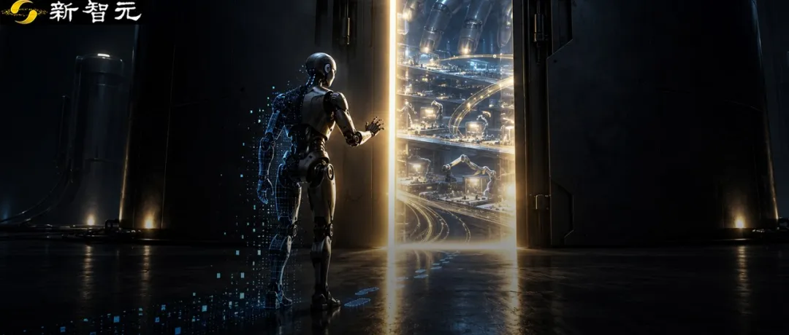
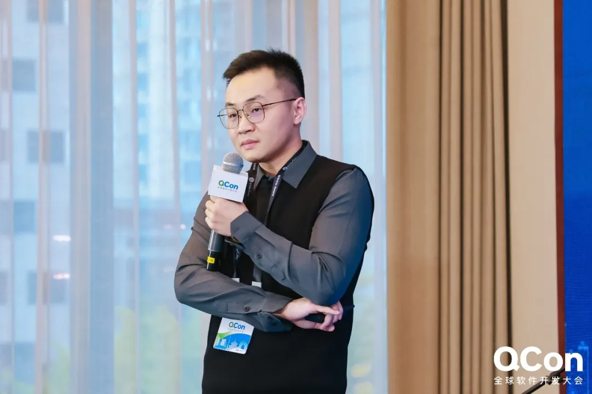
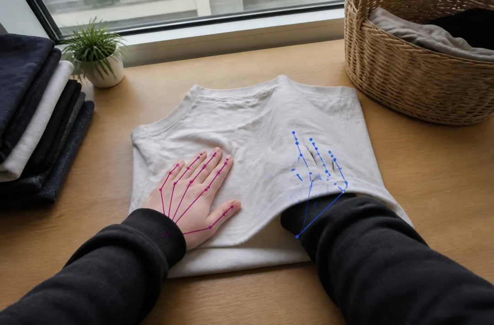
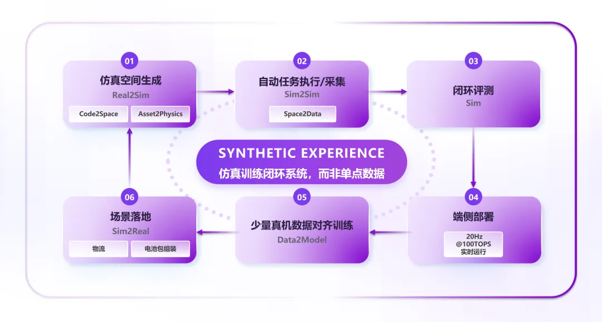
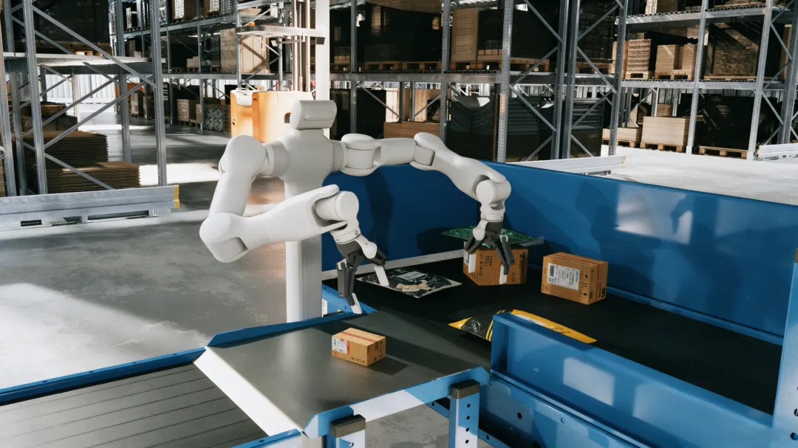
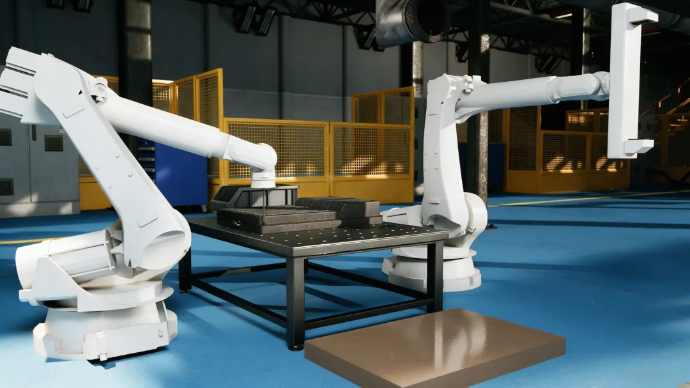
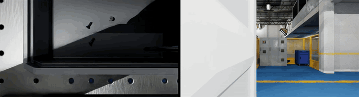

新智元报道
新智元报道
2026年上半年，具身智能赛道狂揽超过460亿元融资，人形机器人的单价也正式迈入「万元以内」的门槛。
每隔几周，就会有一段新的机器人Demo在全网刷屏。但这背后，整个行业却撞上了一堵隐形的墙：真机采集的真实数据太贵、太慢，根本「喂不饱」庞大的模型。
如何破局？
近期的一项前沿测试，给出了一组令人振奋的数据：在复杂操作任务中，利用规模为真机数据5倍的仿真数据进行训练，直接将机器人的真实操作成功率提升了40%，而其获取成本，仅为真机数据的三分之一。
这组数据揭示了一个产业界日益清晰的共识——
如果要走到物理AI的GPT时刻，数据量的需求将超出大模型的两到三个数量级。只有仿真，才是通向拐点的唯一解。
好消息是，坚定这一路线的国内黑马「虚时科技」，已经在底层技术上完成了关键突破。
他们成功把单个仿真场景的生成成本，从数百美元打到了十美元以内，生成周期更是从「周级」直接压缩到了「分钟级」。
但环境生产提速之后，更关键的问题才刚刚展开。
从「生成可用的仿真环境」到「训练出可部署的机器人策略」，中间仍有一整条技术链路需要打通。
这，也正是虚时科技在推进的方向。
今年5月，公司与地瓜机器人联合推出AnySceneGen，推进仿真场景与资产的规模化生成。
在此基础上，虚时科技进一步将研发延伸至自动任务执行、交互数据采集、闭环评测、端侧模型训练与部署。
近期，这家公司又迎来了融资与核心团队的新进展。
新智元获悉，虚时科技已在两个月内连续完成天使轮及天使+轮融资，累计融资数千万元。
与此同时，前地瓜机器人具身智能算法负责人何泳澔博士正式加入，出任CTO。
这些进展背后，是虚时科技逐渐清晰的技术与产品布局：通过自研IntimeVerse仿真训练系统，将场景生成、物理属性对齐、自动任务执行、规模化数据采集、训练评测与端侧部署连接起来，让真实任务中暴露的问题，能够反馈到下一轮数据生产和策略训练中。
具身智能的竞争，正沿着模型与本体向训练基础设施延伸。
在一个本体和大脑公司占多数的赛道里，虚时科技押注的是一件尚未爆发、但迟早要来的事——用仿真数据和训练系统，解决机器人从「会做Demo」到「能干真活」之间的最后一公里。
何泳澔博士的加入，是虚时科技此次释放出的最强信号之一。
围绕具身智能对生成模型、机器人学习与控制能力的协同需求，创始人兼 CEO 王德駪集结起一支学术、工程与落地紧密互补的核心团队。
王德駪曾任亚马逊 Alexa 大模型技术负责人，带领虚时团队推进 Code-to-Space 技术路线，构建可编辑、可交互、具备物理属性的三维资产与仿真空间。
而新任CTO何泳澔是中国科学院自动化研究所博士，加入虚时科技前，曾任地瓜机器人具身智能算法负责人，负责从仿真数据生成、VLA/VA模型设计，到真机数据基础设施建设与端侧部署的全链路研发，在ECCV、CVPR、ICRA、IROS等国际顶级学术会议与期刊发表了30余篇论文，拥有授权专利10余项。

虚时科技新任CTO何泳澔
一位长期关注具身智能的投资人告诉新智元 ：「何泳澔是坚定的‘仿真派’， 是业内少有的兼具数据生成、模型训练与端侧部署经验的技术负责人，对仿真训练全链路有深入的理解和实践。」
在机器人感知与控制端，团队迎来了兼具深厚学术功底与丰富产业落地经验的首席科学家苏虎。
苏虎现任中国科学院自动化研究所副教授，长期从事控制科学、计算机视觉、具身智能、机器学习理论等方向的研究，他的研究覆盖感知、决策与控制。
其相关研究工作是业内最早通过文本或单张图像生成可交互仿真场景并合成机器人操作数据的代表性成果之一。
至此，三位核心技术成员各自带着鲜明的技术长板，共同构成覆盖关键链路的互补体系。
学术研究、模型工程与真机实践三者紧密结合，共同支撑起一条覆盖「仿真空间生成—任务数据采集—操作模型训练—真机验证与反馈」的技术闭环。
一位深耕具身算法的顶尖人才，为何选择在此时All in一家具身仿真初创？
何泳澔看中的，是一项决定研发速度的能力：让数据生产跟上模型迭代。
当下，Ego数据凭借采集方式灵活、场景覆盖广，成为具身智能的重要数据来源。但从采集走向训练，仍有三道关卡。
第一，采集效率受制于人力与时间。
以每天采集10小时、其中30%可用为例，一个人一天只能贡献3小时有效数据。扩大产出，就要持续增加人员、设备与组织投入。这条路径可以扩张，但始终是线性的解决方案。
第二，模型在变，数据要求也在变。
何泳澔将当前的具身智能，类比为自动驾驶收敛到端到端方案之前的阶段：路线并行，范式未定。
从VLA到WAM，不同方案对观测频率、分辨率、动作表示和感知模态的要求各不相同。
以虚时科技正在研发的端侧实时模型为例，精细操作需要60Hz和高分辨率输入。此前按10Hz、低分辨率要求采集的数据，无法凭空补回未被记录的细节。
模型的一次迭代，就可能带来一轮新的采集需求。数据积累得越早，越需要考虑它能否支撑后续变化。
第三，人类示范到机器人动作，还有一段距离。
Ego数据记录的是人类视角下的行为。将其转化为机器人可执行的动作，需要处理姿态估计和本体映射。面向接触密集的精细操作，以视觉为主的采集方案，还需要补充力觉、触觉等关键信息。

ego数据难以准确估计姿态（尤其是在存在遮挡的情况下）
这三道关卡，指向仿真的核心价值：支撑数据规模的指数级增长、提供准确且多模态的操作信息，让数据能够适配不同训练范式的需求。
模型需要更高的采集频率、新的相机视角，或不同的机器人构型，就可以在已有环境中调整配置、完成适配，再组织采集。仿真还能够直接记录环境中的物体状态、动作轨迹与接触信息，减少对事后估计和标注的依赖。
一旦采集流程跑通，产能便可以通过算力并行扩展；已经建立的环境，也能继续服务下一轮训练。模型持续演进，前期投入由此不断积累和复用。
而数据生产与效果验证，必须同步推进。虚时科技将物理参数辨识、真机数据对齐与任务级评测纳入同一流程，用真实任务表现检验数据的价值。
这正是虚时科技押注仿真的底层逻辑：既能规模化生产数据，也能快速响应模型变化，并持续验证机器人能力的提升。
提到仿真，必然绕不开行业内一个尖锐的质疑：Sim-to-Real（仿真到现实）的Gap，究竟能否跨越？
对此，虚时科技CEO王德駪从第一性原理出发，将问题拆成了两层：先学习物理世界的共通规律，再适应具体环境的参数差异。
他以地球和月球作了一个类比——
「地球和月球的重力不同，但遵循同样的物理规律。」
「人登上月球，不需要重新学习走路，只需调整步幅与发力方式，就能逐步适应新的重力环境。」王德駪解释道，「模型需要学习的是物理世界运行的框架，而不是每个参数的精确值。」
在他看来，这与大模型的发展历程高度一致。
早期训练数据里充满杂质，但因为数据量足够大，模型学会了底层框架。
具身模型也一样，视觉仿真Gap接近被填平，物理交互仿真的Gap本质是参数偏差。通过少量真机数据做微调或RSI（递归自我进化），就能快速校准。
模型可以在已有能力的基础上调整策略，将仿真中学到的规律应用于现实环境。
王德駪判断，在数据量达到足够规模的前提下，未来1到2年内，行业将迎来仿真数据驱动的智能涌现拐点。
很多人有个误解，觉得既然是仿真，那「造数据」应该很快。
现实完全不是这样。
传统流程需要建模师手动建资产、摆场景，再由仿真工程师配齐物理参数。
制作一个100平米的仿真场景，要花上一到两周。
每增加一个场景变体，即使复用资产，还需要人工调布局、配参数、验证交互，生产成本线性增长。
而把场景搭好，仅仅是第一步。
如果后续的数据采集依赖人工遥操作，操作人员还需要在仿真环境中控制机器人，一次次完成任务、采集轨迹，失败后还要复位、重试。
每一条有效数据的背后，都是实实在在的人力与时间投入。
从搭建环境到采集任务数据，仿真数据的生产方式本身还停留在「手工作坊」时代，这才是它迟迟无法规模化应用的真正瓶颈。
虚时科技构建的IntimeVerse平台，正是为了打破这个瓶颈。
它包含了四大核心模块：
Code2Space（代码驱动生成）：单场景成本从数百美元降至10美元内
虚时科技通过自研模型直接生成底层代码，代码自动映射为完整的、带物理属性的3D仿真场景。
这背后有一个关键洞察：人类建造和使用空间的过程，本身蕴含一套可拆解、可抽象的结构化逻辑。
王德駪把它称为「空间智能的思维链（Chain of Modeling）。」
把这套逻辑编码为代码，再通过监督学习、强化学习与执行反馈，训练模型输出可执行代码，生成3D资产和场景。
以代码为输出天然可以精细控制变量，改变物体尺寸、组合与空间布局，为同一任务扩展不同条件。
Asset2Physics (物理属性对齐)：生成Sim-ready资产
进入交互训练，仿真场景中的所有资产都需要具备合理的质量、重心、惯性、摩擦及碰撞属性。
虚时科技通过一套交互式可微辨识系统，让仿真中的资产主动和环境交互——推、压、观测反应，再通过梯度回传反向调整物理参数，让仿真中的物理行为无限逼近真实。
用何泳澔的话说：「不是给3D贴标签，而是用交互把实物编译为可仿真物质。」
单资产的物理校准也能做到分钟级，资产外观和物理准确性超过95%。
Space2Data（自动任务发现与数采）：攻克规模化的最大卡点。
有了仿真资产和场景，接下来的问题是，谁来在这个仿真场景里「干活」采数据？
靠人戴VR遥操又回到了线性老路。
虚时的第三个核心模块Space2Data，要解决的正是这个「自动化采集」的行业卡点。
目前，公司自研方案已实现自动化仿真数采，包含已知标准化任务和未知任务自动发现两条路径。
通过感知、规划和动作执行，以及状态监控、失败检测与重新规划，将交互过程组织为可筛选、可回溯的轨迹数据。失败样本还可用于定位覆盖不足的环境条件和动作环节，指导下一轮采集。
成功和失败的轨迹都会保留，形成数据越用越好的飞轮。
目前，这套系统在仿真中的任务执行成功率超过90%，单张RTX 4090显卡日产数据量超过5小时。
Data2Edge：连接策略训练、评测与端侧部署。
生成场景、校准物理、自动采集，虚时科技在仿真数据的「上游」已经建立了完整的能力。
但要真正解决机器人落地的最后一公里，数据只是起点，生成的数据进入策略模型训练后，还需要经过仿真评测、少量真机数据对齐和端侧部署一系列环节。
何泳澔的加入，完整地补齐了虚时科技的技术版图。
第一，端侧轻量化实时具身大脑。目前主流的VLA/WAM等具身模型设计极重，在端侧要么跑不起来，要么只能做到1Hz。
这意味着机器人每秒只能做一个决策，远远达不到实时操作的要求。
何泳澔主导的IntimeBrain方案，通过模型结构层面的创新设计，在100 TOPS算力的端侧芯片上实现了20Hz实时运行，是主流方案的20倍。
这将是业内首个在端侧真正做到实时且精度不显著下降的具身大脑。
第二，多模态仿真基准。 具身智能不仅要「看得见」，还要「摸得着」、「拿得稳」。
光靠视觉引导的精细操作，成功率很难做上去。但加入力觉模态后，成功率能大幅提升。
问题是，力在仿真中一直仿得不好，而真机实验又无法被第三方复现。
何泳澔正在推进的Multi-Modality Sim Benchmark，就是要在仿真中建立一个公平的、同时包含视觉和力觉输入的评测基准。
第三，仿真自动化数据采集的深度推进。 何泳澔非常重视仿真中的自动化数采，并且已经有了长期的研究投入。
至此，四个模块形成完整衔接，实现真正意义上的闭环。
这也回应了虚时反复强调的一个理念：他们提供的是完整的synthetic experience——
一套覆盖场景生成、物理对齐、自动采集、模型训练、仿真评测和端侧部署的闭环体系。

商业化落地上，虚时科技选择了极其务实的战略：工业制造场景优先。
为什么不先做资本最热的「人形机器人做家务」？
「物理AI和物理世界直接关联，出问题的后果比语言模型大得多，也直观得多」王德駪解释道。
「工业场景相对固定、稳定，自动化基础高，更适合新技术的试验和验证。居家场景涉及更多的人机交互和安全问题，需要技术更加成熟。」
他还特别强调了一点：具身能力的价值，不在于形态是不是像人，而在于能不能应对复杂情况、稳定完成任务。
快递供包就是一类典型挑战：硬箱、软包、异形件刚柔混合，质量与摩擦特性差异显著，包裹还在持续运动、接触并相互扰动。

物流分拣场景：包裹识别、抓取与供包
左臂腕部视角、头部视角、右臂腕部视角
这要求仿真系统同时处理多样的物体形态、物理属性与动态交互，为连续操作任务提供有效的训练环境。
围绕这一场景，虚时已完成业界首个100%基于仿真的快递分拣全流程训练方案。
虚时的仿真训练能力，已进入客户项目与交付阶段。
面向快递供包和电池包装配，公司正在推进场景适配、训练数据生产与策略验证。
前者需要处理持续运动、刚柔混合的包裹，后者涉及精细接触与多步骤操作，对数据质量、本体适配和训练效果提出了具体要求。

工业装配场景（电池包）：精密操作与长时序任务

左臂腕部视角、右臂腕部视角
目前，虚时正根据某新能源电池装配企业的电池包装配产线需求，提供仿真训练数据及相关服务；同时，针对北京某头部具身智能厂商的特定机器人构型与操作任务，公司也在推进相应的仿真训练数据服务。相关项目已进入订单交付阶段。
随着项目推进，客户的任务要求进入研发流程，形成的场景、物理资产与任务库也持续沉淀，为后续项目的适配和交付提供复用基础。
当整个行业都在抢本体、抢真机数据时，虚时看到的是数据供给与模型迭代之间的基础设施缺口。
在虚时看来，真机采集本质上是线性扩展的，而具身智能对训练数据的需求正在呈指数级增长；在这一供需矛盾持续扩大、模型范式尚未收敛的窗口期，唯一的出路是一套按需生成、持续迭代的仿真训练系统。
从AnySceneGen到IntimeVerse，从空间生成到客户交付，虚时正在把这项判断落实为产品与订单。
编辑：Aeneas 所罗门